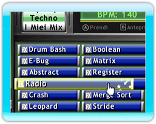
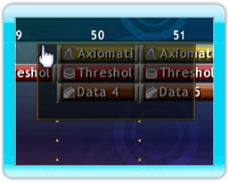
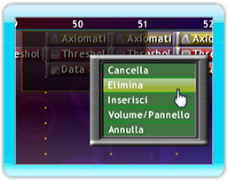

14 |
Creare la musica |
 |
|

Ora che sai come ascoltare in anteprima tutti i loop che Mix Superstar contiene, probabilmente vorrai iniziare a usarli. Nel browser, seleziona un loop con il pulsante A e trascinalo dove vuoi sulla schermata con la griglia. Per rimuovere i loop è sufficiente trascinarli in alto fuori dalla schermata.
Copiare i loop è semplicissimo. Prendi un loop premendo il pulsante A. Se premi il pulsante B, una copia di quel loop apparirà sulla griglia.
Se vuoi copiare più loop, seleziona un’area attorno ai loop desiderati tenendo premuto il pulsante A su un punto vuoto nella griglia e trascina il puntatore per creare un rettangolo. Ora puoi scegliere più loop con il pulsante A e fare delle copie con il pulsante B, come prima.
Per montare loop multipli in un’unica volta, evidenzia un insieme di loop come sopra e poi premi il pulsante B sulla parte evidenziata per mostrare le opzioni di loop multipli. Seleziona ‘Pulisci’ per rimuovere i loop dalla canzone lasciando lo spazio originario dove i loop erano intatti. Per rimuovere i loop e lo spazio evidenziato, seleziona ‘Cancella’. Se desideri inserire più spazio sulle tracce evidenziate, seleziona ‘Inserisci’ e tutti i loop presenti nello spazio della traccia evidenziata saranno spostati in avanti. Per ingrandire o rimpicciolire un mix, premi il pulsante + o il pulsante – e potrai regolare con precisione la durata dei loop nel mix. Puoi anche scorrere a sinistra e a destra del mix usando la Pulsantiera+ o premendo il pulsante B su un'area vuota e trascinando a sinistra o a destra. |
 |
 |
 |